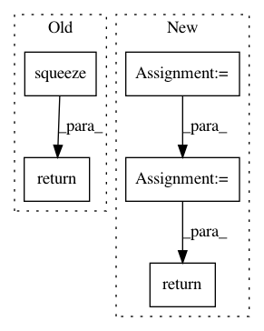

54bf5e9f9daf14d281483ad0dbafcf36f44f5ed6,skimage/restoration/non_local_means.py,,denoise_nl_means,#,9
Before Change
return np.squeeze(
np.asarray(_fast_nl_means_denoising_2d(image, **nlm_kwargs)))
else:
return np.squeeze(
np.asarray(_nl_means_denoising_2d(image, **nlm_kwargs)))
else: // 3-D grayscale
if fast_mode:
return np.asarray(_fast_nl_means_denoising_3d(image, **nlm_kwargs))
else:
After Change
"change to preserve_range=False. To avoid this warning, "
"explicitly specify the preserve_range parameter.",
stacklevel=2)
preserve_range = True
image = convert_to_float(image, preserve_range)
kwargs = dict(s=patch_size, d=patch_distance, h=h, var=sigma * sigma)
if multichannel: // 2-D images
if fast_mode:
return _fast_nl_means_denoising_2d(image, **kwargs)
else:
return _nl_means_denoising_2d(image, **kwargs)
else: // 3-D grayscale
if fast_mode:
return _fast_nl_means_denoising_3d(image, **kwargs)
else:
In pattern: SUPERPATTERN
Frequency: 3
Non-data size: 5
Instances
Project Name: scikit-image/scikit-image
Commit Name: 54bf5e9f9daf14d281483ad0dbafcf36f44f5ed6
Time: 2020-02-11
Author: rfezzani@gmail.com
File Name: skimage/restoration/non_local_means.py
Class Name:
Method Name: denoise_nl_means
Project Name: interactiveaudiolab/nussl
Commit Name: 2ffbfa3a6bd3b8de8e21a762489346054dcd9ccc
Time: 2020-03-12
Author: prem@u.northwestern.edu
File Name: nussl/separation/deep/deep_mask_estimation.py
Class Name: DeepMaskEstimation
Method Name: extract_features
Project Name: librosa/librosa
Commit Name: 85e89ae2495998ae69ab34abf5400164f909a548
Time: 2013-12-21
Author: brm2132@columbia.edu
File Name: librosa/core.py
Class Name:
Method Name: cqt